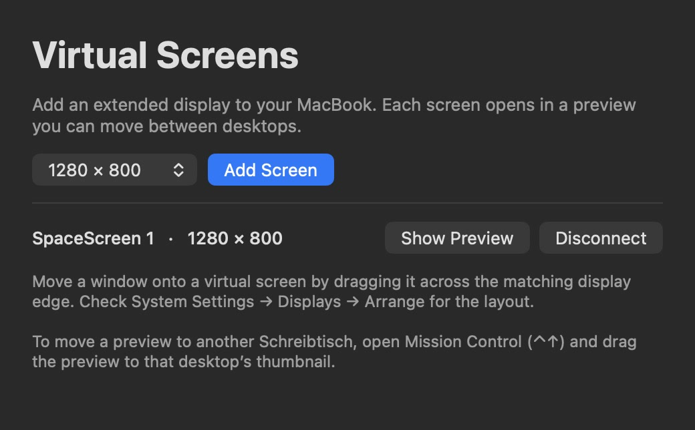
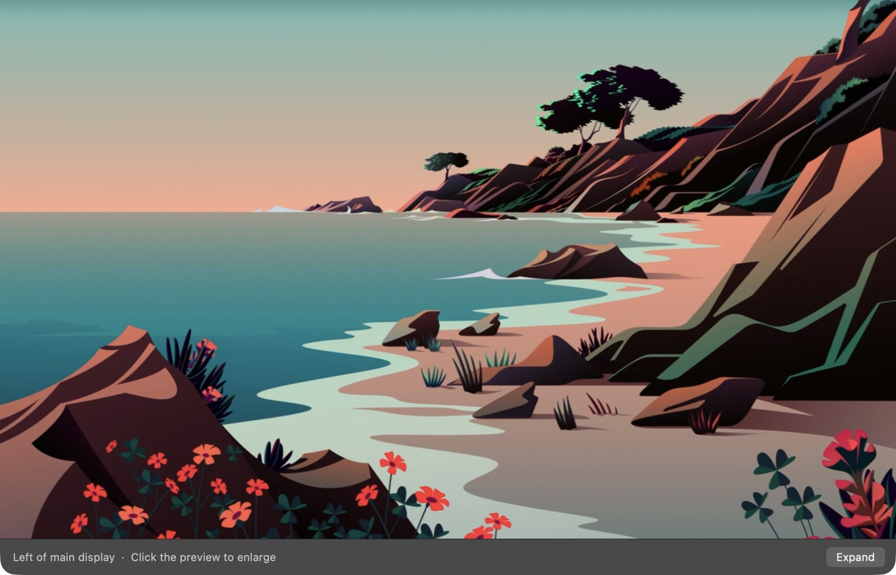

BUILDING IN PUBLIC · NOTES
SpaceScreens gives my MacBook another display
I built a Mac app that creates virtual extended displays and lets me use them through movable live previews.
When I’m working on a laptop, I sometimes want an extra display for a reference window or a preview I can check without rearranging the rest of the desktop. SpaceScreens creates that display in macOS and gives me a window to see and interact with it on the MacBook.

Adding and using a virtual display
Pick a resolution and click Add Screen. SpaceScreens can create up to three extended displays. The macOS Displays settings show how they’re arranged, so I can move an app onto a virtual display by dragging its window across the corresponding edge. The live preview shows what’s on that display. I can also move the preview window onto another desktop in Mission Control.

Click the preview (or Expand) to enlarge it, then click inside it to move the pointer into the virtual display and use the apps there. Move back across the connecting edge or press Control + Option + , to return to the MacBook screen. Closing the preview keeps the display connected. I can reopen it from the manager or disconnect it when I’m done.
How the preview works
The build targets Apple silicon Macs running macOS 14 or later. It uses an undocumented macOS interface to create the extended display and ScreenCaptureKit to render the preview locally. macOS requires screen recording permission for the preview. The app has no networking or recording-to-file feature.